sar is a tool for collecting, reporting, or storing system activity information.
Statistics
Paging
Here are descriptions for paging fields:
| Field |
Description |
| pgpgin/s |
The total number of bytes that the system has paged in from the disk per second. |
| pgpgout/s |
The total number of bytes that the system has paged out to the disk per second. |
| fault/s |
The number of page-missing failures (major and minor faults) per second caused by the system. |
| majflt/s |
The number of major faults per second caused by the system. |
| pgfree/s |
The number of pages that the system stores in the idle list per second. |
| pgscank/s |
The number of pages scanned per second by the kswapd daemon. |
| pgscand/s |
The number of pages scanned directly per second. |
| pgsteal/s |
The number of pages that the system reclaims per second from the page cache and the swap cache. |
| %vmeff |
The formula for this percentage is pgsteal divided by pgscan, which represents the efficiency of page reclaim. |
Options
Here are some options for sar command:
| Option |
Description |
| -B |
Report paging statistics. |
| -b |
Report I/O ad transfer rate statistics. |
| -d |
Report block device activity statistics. |
| -H |
Report hugepage utilization statistics. |
| -n {keywork [,…] | ALL} |
Report network statistics, available keyworkds are: DEV, EDEV, NFS, NFSD, SOCK. |
| -q |
Report queue length and load average. |
| -r |
Report memory utilization statistics. |
| -S |
Report swap space utilization statistics. |
| -u [ALL] |
Report CPU utilization. the ALL keyword displays all CPU fields. |
| -v |
Report inode, file and kernal tables status. |
| -W |
Report swapping statistics. |
| -w |
Report task creation and system switching activity |
Examples
Before we start using it, we need to install it:
Show Paging Statistics
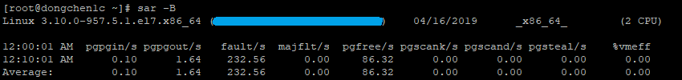
Show I/O Statistics
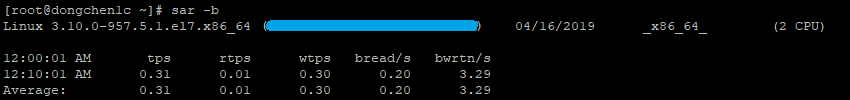
Show Block Device Activity Statistics
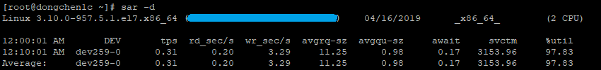
Show Hugepage Utilization Statistics
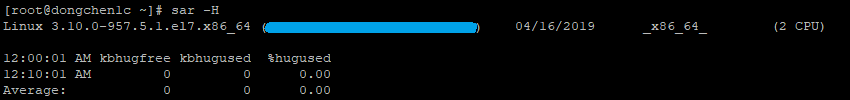
Show All Network Statistics
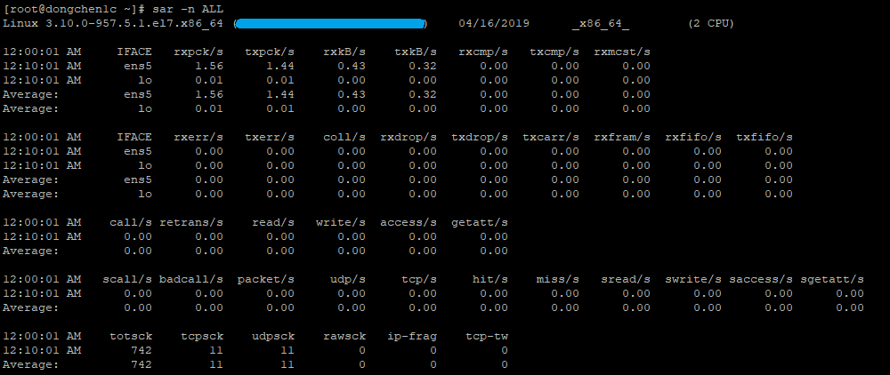
Show Queue Length and Load Average Statistics
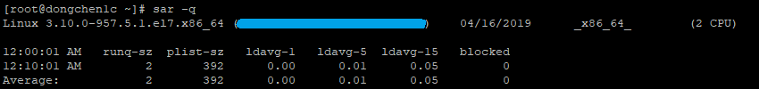
Show Memory Utilization Statistics
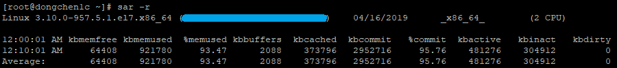
Show Swap Space Utilization Statistics
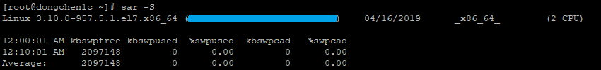
Show All CPU Utilization Statistics
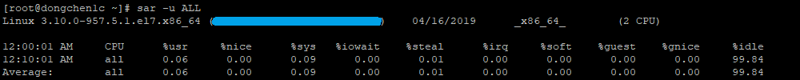
Show Inode, File and Kernel Tables Status
Show Swapping Statistics
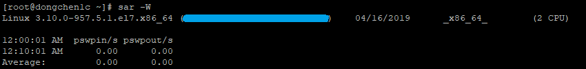
Show Task Creation and System Swicthing Activity
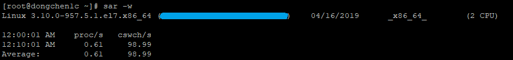
References
SAR(1)
 Buy me a coffee
Buy me a coffee